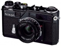

器材库 > 旁轴胶片相机 > SP Limited Edition

规格总览
产品类型
可换镜头旁轴胶片相机
发布日期
2005-01-14
厂家推荐价格
690,000.00 （日元）
使用胶卷/胶片
35mm胶卷
停产
是
快门
快门类型
机械控制，横走式，焦平面快门
快门速度
T, B, 1, 1/2, 1/4, 1/8, 1/15, 1/30, 1/60, 1/125, 1/250, 1/500, 1/1000秒
外观
颜色
黑色
尺寸
136×81×43mm
重量
590g
fox0072009-03-22 15:494.33 分
操作性 4.50功能性 4.00美观性 5.00趣味性 5.00耐用性 4.50性价比 3.00
上海小黑2007-04-23 21:453.5 分
操作性 2.50功能性 3.00美观性 4.50趣味性 5.00耐用性 3.50性价比 2.50
williamyuan2005-05-10 10:492.75 分
操作性 0.50功能性 0.50美观性 5.00趣味性 5.00耐用性 5.00性价比 0.50
产品图 / 样片
尼康 SP Limited Edition